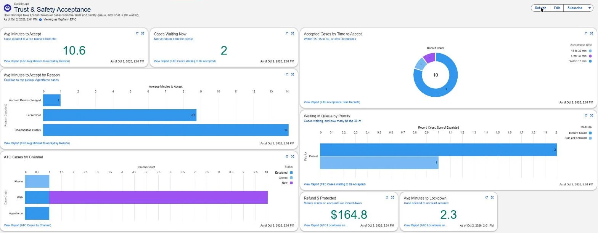
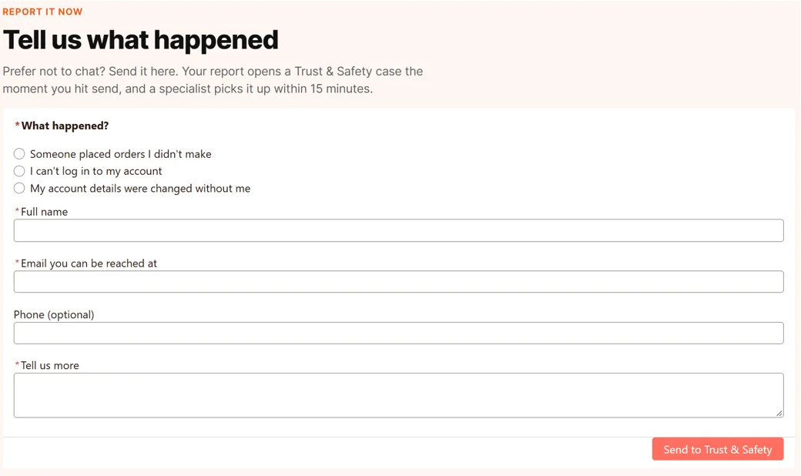
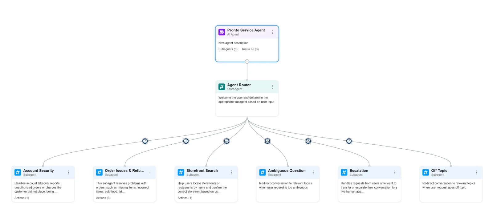
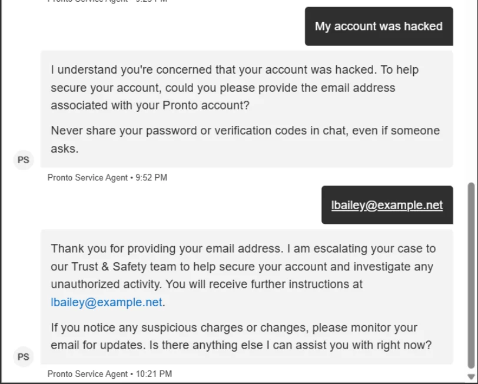
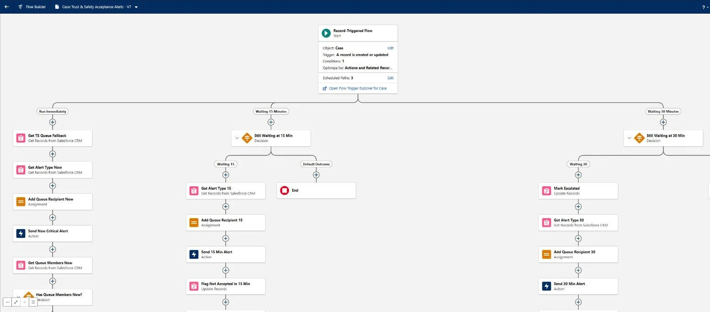
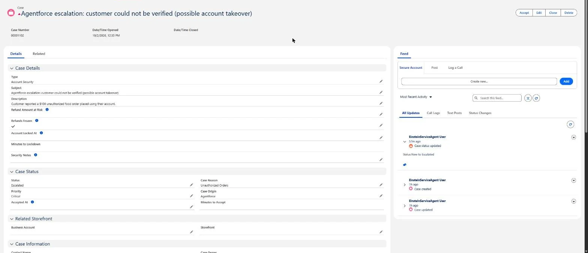

Salesforce IDEAthon · Oct 2026 · Team of 3
Pronto: Account Takeover Response on Salesforce
Pronto is an online food-ordering marketplace, and our IDEAthon case asked what happens when a customer's account gets hijacked. In one week our team built a Salesforce solution that gets every hacked-account report to a real person on the Trust & Safety team fast, and protects the customer while they wait.

The problem
When someone breaks into a food-delivery account, the damage follows a pattern. They change the email so the real owner can't sign back in, then place orders on the saved card. The customer is now locked out, so a support chat that needs them to be signed in can't help them. Every minute nobody picks up the report, refunds and frustration pile up.
So we focused on one question: when a customer reports a hijacked account, how fast does a real person on Trust & Safety pick it up, and what protects the customer in the meantime?
What we built
A way to report without logging in
We built the customer site in Experience Cloud with an Account Security page. A locked-out customer picks what happened, leaves their name and an email they can still reach, and sends it. The form is a screen flow, so every submission creates an Account Security case right away, shows the customer their case number, and emails them a confirmation.

An agent that knows when to hand off
Our Pronto Service Agent in Agentforce has one router that greets the customer and passes the conversation to one of six subagents: Account Security, Order Issues & Refunds, Storefront Search, Ambiguous Question, Escalation and Off Topic.

The agent asks for the email on the order before it shares anything, and it never asks for a password, card number or code. When a customer says their account was hacked, it warns them not to share passwords or codes in chat, takes the account email, and runs a flow that opens a Critical case for Trust & Safety, with refunds already frozen.

Automation that routes, protects and times every case
Behind the site and the agent, ten flows handle each case the moment it is created, with no one typing anything into Salesforce.
| Flow | What it does |
|---|---|
| Site: Report Account Takeover | The no-login form. Creates the case and shows the case number. |
| Agent: Escalate Account Takeover | Opens the case from chat and gives the agent the case number. |
| Route Account Security to Trust & Safety | Puts every new account-security case in the Trust & Safety queue. |
| Set Critical for Unauthorized Orders | Raises the priority to Critical when orders were placed without permission. |
| Freeze Refunds on Account Security | Freezes refunds so an attacker can't redirect them. |
| Trust & Safety Acceptance Alerts | Alerts the queue right away, alerts again and flags the case at 15 minutes, then escalates and emails managers at 30. |
| Stamp Accepted At | Records when a rep takes the case, which feeds Minutes to Accept. |
| Sync Escalated Flag with Status | Keeps the Escalated checkbox and the case status in step. |
| Secure Account | A button on the case that lets a rep lock the account down and records when. |
| Email Report Confirmation | Emails the customer their case number after a web report. |

A dashboard that shows where we miss the window
We added custom fields to the Case object, including Accepted At, Minutes to Accept, Refund Amount at Risk, Refunds Frozen, Account Locked At and Minutes to Lockdown. They feed the dashboard at the top of this page: average minutes to accept, cases waiting right now, how many were picked up within 15 minutes, 15 to 30, or over 30, cases by reason and channel, and refund dollars protected.
That is what turns the build into a decision. In the version we presented, Locked Out cases were the slowest to be picked up, so our next step was to move them to the top of the queue.

Presenting it
We presented Pronto to a panel of judges in a 15-minute live session. For the demo we started a chat on our public site, asked "Where is my order?" and gave a customer's email. Then we opened the two flows behind the answer, Identify Customer By Email and Get Orders By Contact, so the judges could see how an email leads to the right customer and their orders without the agent ever asking for a password.